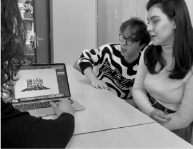
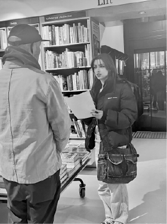
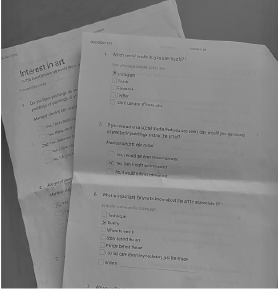

Project 1: Group Project One Research about the new system - conclusion User Testing - Group Project 3
This semester, I've been deeply immersed in various research methodologies, interviews,
persona development, and more, across all of my projects.
The significance of conducting thorough research first became evident during my initial group assignment.
I conducted an in-depth interview with the client, focusing on specific questions to gain deeper insights.
Subsequently, we designed a survey, which I tested with two individuals. Combining the results of my tests with those
conducted by my group members, we were able to construct personas, providing us with a clearer understanding of our target audience.
For more details you can read more in the document below
Later on, Li Li assigned me and three of my classmates the task of researching student perceptions of merged courses
(demand and course-based). I designed a survey and gathered responses from 40 students
enrolled in both Semester 2 and 3 courses. Analyzing the data collected allowed me to draw
insightful conclusions about student sentiments towards the changes (for these insights and conclusions you shoul check out this link below).
Project 2:
For the second group project, we made several videos, and two of them were about the same story, clips, and sounds - just different editing.
Since we did not know which one we should choose, or what should we change about the mentioned videos, we decided to do some user testing
(I conducted it with one of my groupmates).
Throughout this test, we showcased both of the movies, and after that, I asked several questions, about the content, design, and clarity.
Since one of our intentions with these tests was to decide between the two videos, I also asked some simple questions that revealed which one they liked more.
My conclusion at the end of the tests (after testing with six people - 6 international students), was that our ideas were great but because of the similarities that
the two videos had, everyone chose the option that we first showcased, therefore in the end we decided on merging the two clips.
If you would like to see the videos about the user tests, you can request it through email.
Project 3:
For our final group project, we had to make an easter egg for the same website as before. After making a simple code with our idea,
we decided to do user testing, to make sure that in the final product, everyone would go fluently, and on the other hand, we were curious what the user
would think about specific subjects connected to our easter egg.
Overall, the test went great, since it gave us not just an insight, but also some new ideas about our easter egg, and fortunately I could change everything that needed a change in time.
For a more in-depth insight, you can read the document below.


